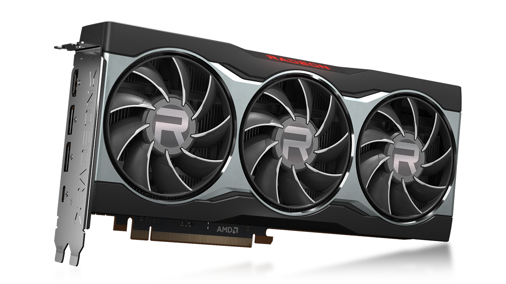

RX 6800XT
La tarjeta XT gráfica AMD Radeon™ RX 6800 XT, potenciada con la arquitectura AMD RDNA™ 2 y equipada con 72 potentes unidades de procesamiento mejoradas, 128MB de la flamante tecnología AMD Infinity Cache y 16GB de memoria GDDR6 dedicada, está diseñada para alcanzar velocidades de cuadros ultraaltas y jugar en 4K con una calidad deslumbrante.

Aumenta Los FPS
AMD FidelityFX™ Super Resolución (FSR) utiliza tecnologías avanzadas de escalamiento para aumentar las frecuencias de cuadros en títulos seleccionados1 y garantizar experiencias de juego de excelente calidad en alta resolución sin tener que cambiar la tarjeta gráfica.